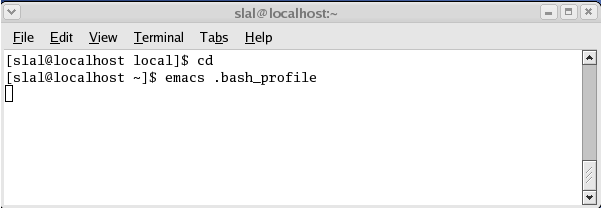
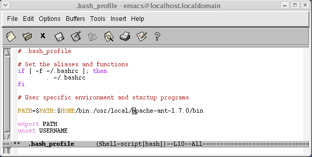
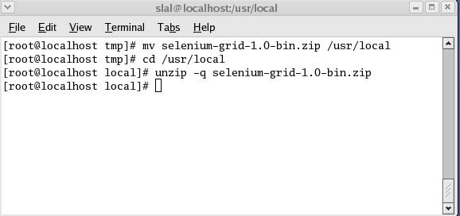
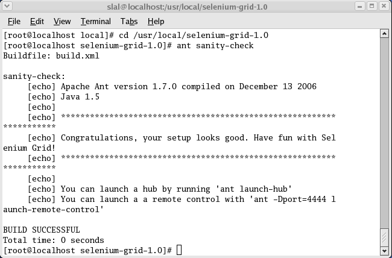

Here are detailed, step by step instructions, on how to install Selenium Grid on an Linux machine.
Ensure that the JDK 1.5 or newer is installed on
your machine. To check the version of you JDK,
open a terminal window and run the following command:
java -version

If the JDK is not installed or is older than 1.5, please install a newer JDK following the instructions described at http://java.sun.com/j2se/1.5.0/install-linux.html.
Selenium Grid requires that you install Ant 1.7.
Depending on your environment and Linux flavor you might
already have Ant 1.7 on your machine. To check whether
Ant is installed and which version you have,
execute ant -version in a terminal:
If you already have the correct Ant version you can skip the
rest of this section and jump to
Step 3: Installing Selenium Grid
. Otherwise you can install
Ant 1.7 manually by following the instructions below:
Once it has been downloaded, unzip the file in a
directory on your local system. For instance under
/usr/local/apache-ant-1.7.1:
Users might not have root access, let's document an
install in the Home directory. e.g. ~/utils.
You then need to modify your PATH so that your
system picks up the right Ant launcher. Just go to a
Terminal window and:
cd
and then the ENTER key), and open the
.bash_profile file.

.bash_profile file so that the i
freshly installed Ant version 1.7 is first in your path:

.bash_profile file (Menu "File"->"Save")
Apply the .bash_profile to the current terminal. Then
verify that your PATH is set accordingly and that you
pick up the right Ant version:
/usr/local/selenium-grid-1.0).
We will refer to the directory where Selenium Grid is installed as
"Selenium Grid Home". For instance if you unzipped the distribution
within /usr/local/selenium-grid-1.0, your Selenium Grid Home is
/usr/local/selenium-grid-1.0.

Verify the Selenium Grid install: from the terminal window
go to the Selenium Grid home directory and run:
ant sanity-check

If the build is successful, you are all set!